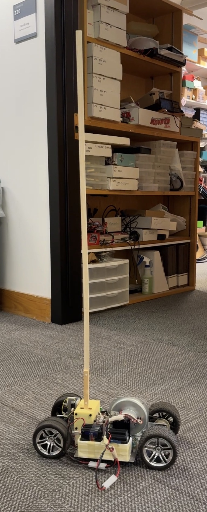
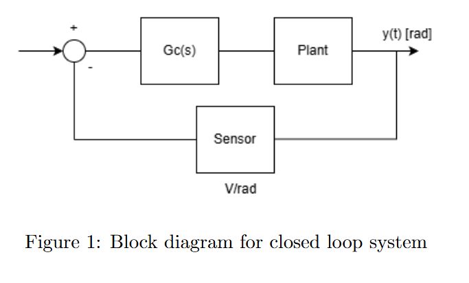
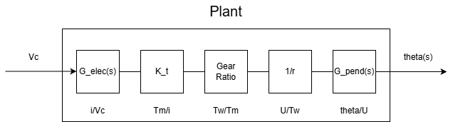

Feedback-Controlled
Inverted Pendulum Car
ENGS 26: Control Theory | Dartmouth College
System Modeling · Feedback Control · MATLAB · Hardware Testing


Project Overview
Goal: Design and build a feedback-controlled car capable of balancing an inverted pendulum (a vertical stick) by automatically moving to correct its tilt. Starting from first principles, we modeled the system's physical behavior, designed a controller, and tested and refined its performance on real hardware.
Tools: MATLAB, Simulink/SISOTOOL, electronic components, experimental measurements
Skills: Mechanical system modeling, feedback control, circuit design, hardware testing, iterative problem-solving
System Modeling
We began by developing a mathematical model of how the car and pendulum move together. Using Newton's laws of motion, we derived equations describing the system and used them to predict how the pendulum would respond to the car's movement.
We then incorporated the motor, drivetrain, and angle sensor into a complete feedback model.
To make the model reflect the actual hardware, we measured key properties experimentally, including the motor's response and the sensor's relationship between voltage and pendulum angle.




Controller Design & Implementation
Using our system model, we designed a PID controller in MATLAB to keep the pendulum upright while responding quickly to disturbances and minimizing oscillations. We first derived a theoretical controller using MATLAB's SISOTOOL (Figure 1), then translated its transfer function into a physical circuit using resistors and capacitors.
Figure 1. Theoretical Controller


Figure 2. Experimental Controller


Although the theoretical controller (Figure 1) performed well in simulation, the physical system responded too slowly, and excessive gain saturated the motor's power amplifier. This highlighted limitations in our model, including unaccounted-for effects such as friction.
To address these challenges, we systematically adjusted resistor and capacitor values, testing how each change affected the car's response. The resulting experimentally tuned controller (Figure 2) achieved stable performance on the actual hardware.
Results & Performance
Our final controller successfully stabilized the inverted pendulum, automatically moving the car to counteract changes in the pendulum's angle.
Through repeated testing and tuning, we improved the system's response speed, reduced unwanted oscillations, and enabled the car to recover from disturbances.
The project demonstrated both the value of first-principles modeling and the importance of experimental validation when designing real-world control systems.